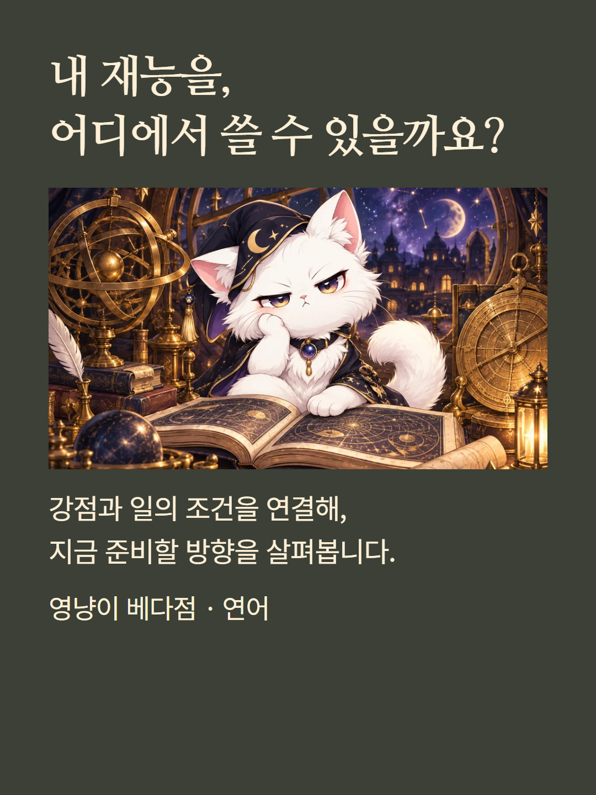
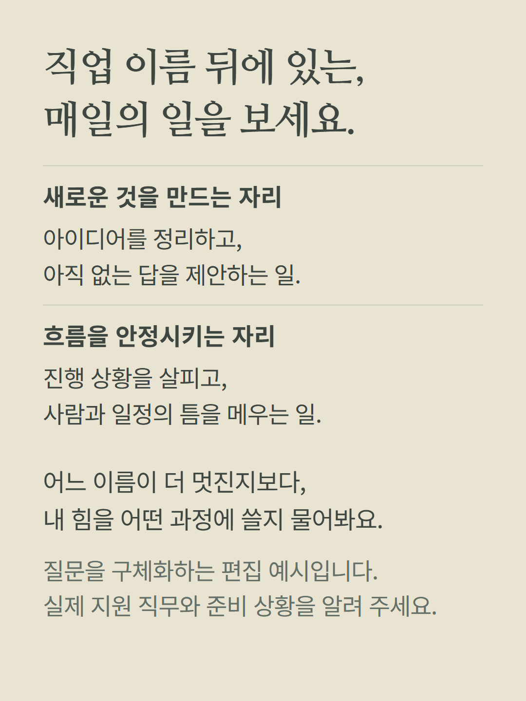
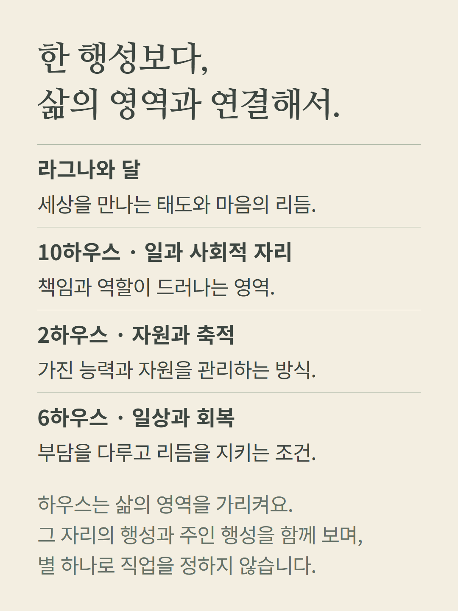
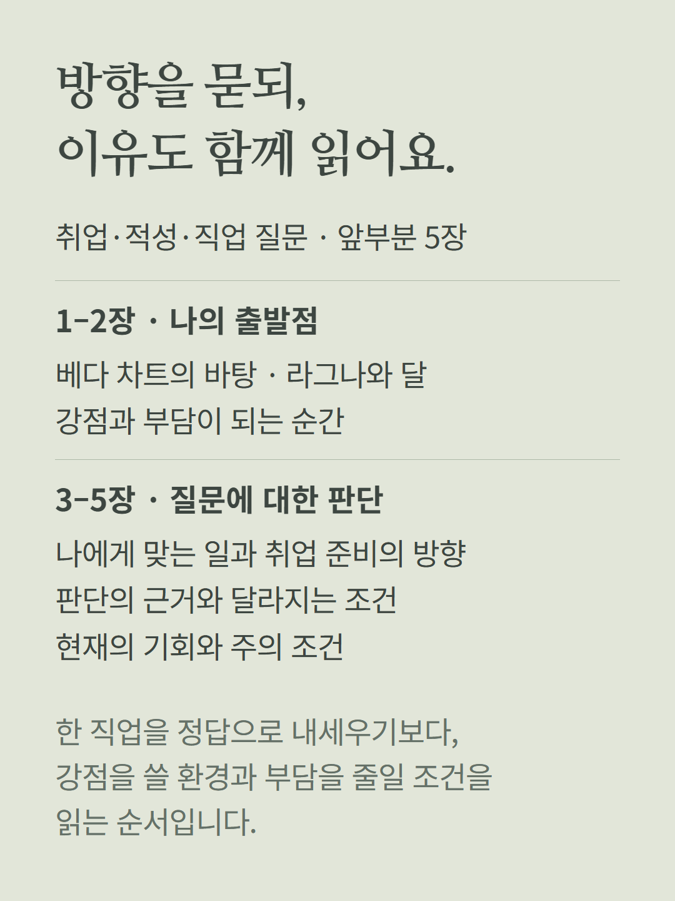
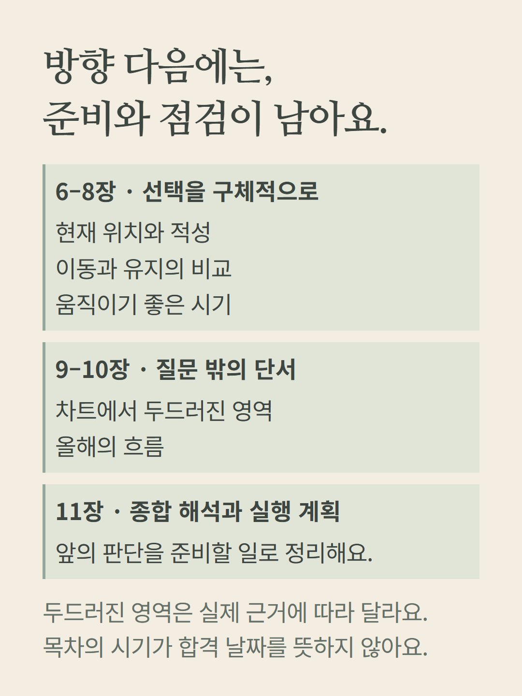
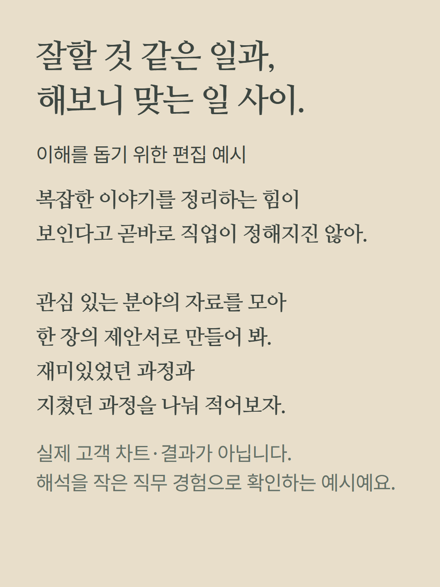
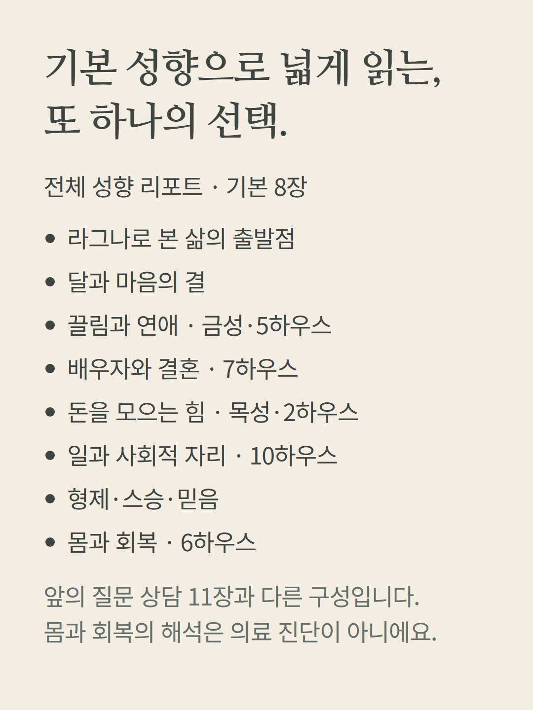
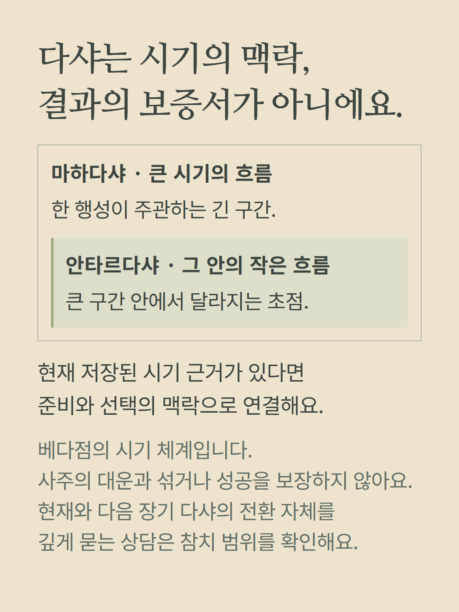
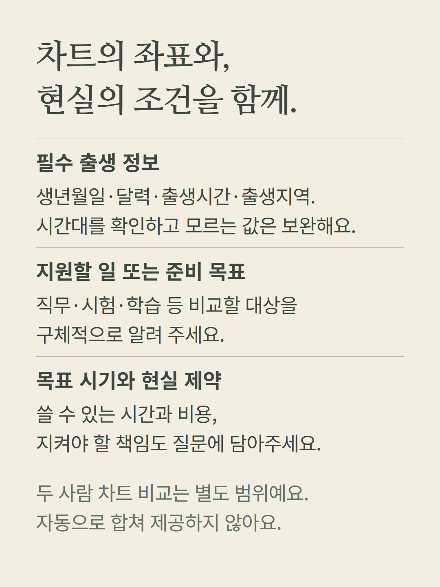
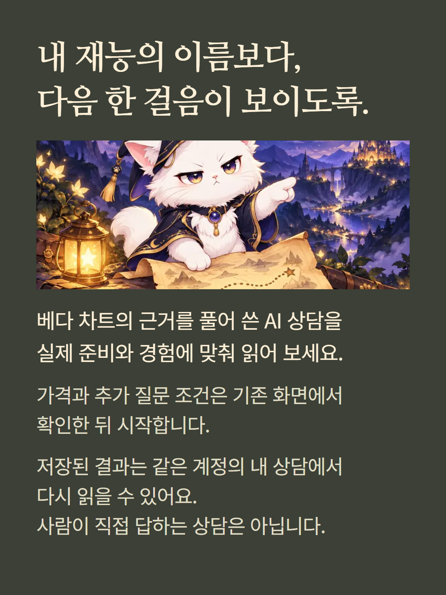

베다점 연어 질문 상담은 진로·시험·재물·이동 등 중요한 선택의 조건을 읽습니다. 여기서는 취업·적성·직업 질문 11장과 별도 기본 성향 리포트 8장을 안내합니다. 실제 라그나·달·하우스·행성과 다샤 근거를 사용하며 직업명이나 합격·수익을 확정하지 않습니다. 큰 시기인 마하다샤와 그 안의 안타르다샤를 구분하고 사주 대운으로 부르지 않습니다. 목차는 질문에 따라 바뀌며 두 사람 비교·장기 다샤 전환은 별도 범위입니다. 사례는 편집 예시이며 AI 작성 상담입니다. 가격과 추가 질문 조건은 기존 화면에서 확인합니다.